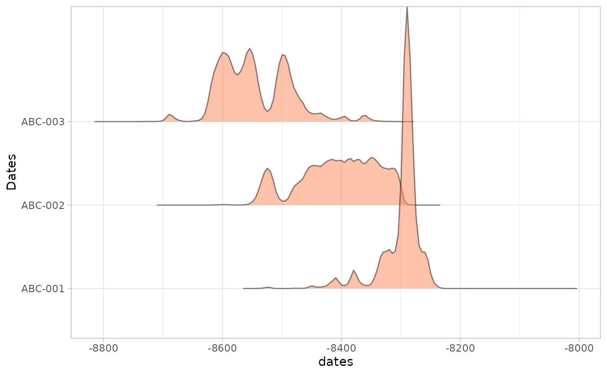
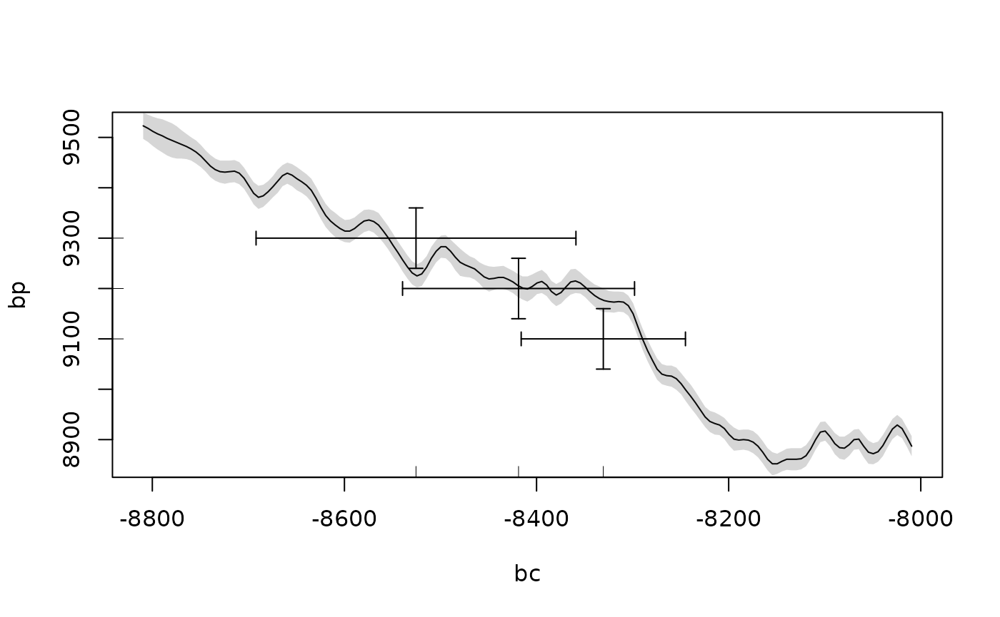

The Chronological Query Language (CQL) is a tool for formally describing chronological models (Bronk Ramsey 1998). It is most commonly used to input data for Bayesian radiocarbon calibration in OxCal (Bronk Ramsey 2009). stratigraphr includes an R interface for CQL2, the version used in OxCal v3+.
This vignette describes how to use this interface to generate CQL models in R.
cql_* functions.cql() to group together CQL functions or include arbitrary CQL code.write_oxcal() or the oxcAAR package.Used in the simple way above, stratigraphr’s CQL interface offers little benefit over writing CQL directly. Its real power is in combining cql() with other R tools to build models based on other data.
For the following examples, we will use stratigraphic and radiocarbon data from Shubayqa 1 (Richter et al. 2017):
With radiocarbon and stratigraphic data in a tabular format, you can take advantage of dplyr’s powerful tools for data manipulation to build CQL models programmatically.
For example, use dplyr::mutate() to concisely express a table of dates as CQL R_Date commands:
library("purrr")
library("dplyr")
#>
#> Attaching package: 'dplyr'
#> The following objects are masked from 'package:stats':
#>
#> filter, lag
#> The following objects are masked from 'package:base':
#>
#> intersect, setdiff, setequal, union
shub1_radiocarbon %>%
mutate(r_date = cql_r_date(lab_id, cra, error)) %>%
pluck("r_date") %>%
cql()
#> // CQL2 generated by stratigraphr v0.3.0
#> R_Date("RTD-7951", 12166, 55);
#> R_Date("Beta-112146", 12310, 60);
#> R_Date("RTD-7317", 12289, 46);
#> R_Date("RTD-7318", 12332, 46);
#> R_Date("RTD-7948", 12478, 38);
#> R_Date("RTD-7947", 12322, 38);
#> R_Date("RTD-7313", 12346, 46);
#> R_Date("RTD-7311", 12367, 65);
#> R_Date("RTD-7312", 12405, 50);
#> R_Date("RTD-7314", 12273, 48);
#> R_Date("RTD-7316", 12337, 46);
#> R_Date("RTD-7315", 12445, 70);
#> R_Date("RTK-6818", 12477, 76);
#> R_Date("RTK-6820", 12385, 75);
#> R_Date("RTK-6821", 12385, 78);
#> R_Date("RTK-6822", 12412, 79);
#> R_Date("RTK-6823", 12321, 78);
#> R_Date("RTK-6813", 12344, 85);
#> R_Date("RTK-6816", 12389, 78);
#> R_Date("RTK-6819", 11325, 74);
#> R_Date("RTK-6812", 11365, 72);
#> R_Date("RTK-6817", 11322, 75);
#> R_Date("RTD-8904", 10317, 38);
#> R_Date("RTK-6814", 10229, 70);
#> R_Date("RTD-8902", 10107, 53);
#> R_Date("RTD-8903", 10095, 52);
#> R_Date("RTK-6815", 1229, 54);Or use dplyr::group_by() and dplyr::summarise() to build phase models. This is a three stage process, illustrated below with the phase model from Shubayqa 1:
cql_phase().boundaries to automatically add boundary constraints between them. If we had multiple independent sequences, we could include an additional grouping variable here, before concatenating them with cql().
shub1_radiocarbon %>%
filter(!outlier) %>%
group_by(phase) %>%
summarise(cql = cql_phase(phase, cql_r_date(lab_id, cra, error))) %>%
arrange(desc(phase)) %>%
summarise(cql = cql_sequence("Shubayqa 1", cql, boundaries = TRUE)) %>%
pluck("cql") %>%
cql() ->
shub1_cql
#> `summarise()` ungrouping output (override with `.groups` argument)
shub1_cql
#> // CQL2 generated by stratigraphr v0.3.0
#> Sequence("Shubayqa 1")
#> {
#> Boundary("");
#> Phase("Phase 7")
#> {
#> R_Date("RTD-7951", 12166, 55);
#> R_Date("Beta-112146", 12310, 60);
#> R_Date("RTD-7317", 12289, 46);
#> R_Date("RTD-7318", 12332, 46);
#> R_Date("RTD-7948", 12478, 38);
#> };
#> Boundary("");
#> Phase("Phase 6")
#> {
#> R_Date("RTD-7947", 12322, 38);
#> R_Date("RTD-7313", 12346, 46);
#> R_Date("RTD-7311", 12367, 65);
#> R_Date("RTD-7312", 12405, 50);
#> R_Date("RTD-7314", 12273, 48);
#> R_Date("RTD-7316", 12337, 46);
#> R_Date("RTD-7315", 12445, 70);
#> };
#> Boundary("");
#> Phase("Phase 5")
#> {
#> R_Date("RTK-6818", 12477, 76);
#> R_Date("RTK-6820", 12385, 75);
#> R_Date("RTK-6821", 12385, 78);
#> R_Date("RTK-6822", 12412, 79);
#> R_Date("RTK-6823", 12321, 78);
#> };
#> Boundary("");
#> Phase("Phase 4")
#> {
#> R_Date("RTK-6813", 12344, 85);
#> R_Date("RTK-6816", 12389, 78);
#> };
#> Boundary("");
#> Phase("Phase 3")
#> {
#> R_Date("RTK-6819", 11325, 74);
#> };
#> Boundary("");
#> Phase("Phase 2")
#> {
#> R_Date("RTK-6812", 11365, 72);
#> R_Date("RTK-6817", 11322, 75);
#> };
#> Boundary("");
#> Phase("Phase 1")
#> {
#> R_Date("RTD-8904", 10317, 38);
#> R_Date("RTK-6814", 10229, 70);
#> R_Date("RTD-8902", 10107, 53);
#> R_Date("RTD-8903", 10095, 52);
#> };
#> Boundary("");
#> };You can run models generated by cql() using the desktop or online versions of OxCal by simply copying the output into the program. Alternatively, use write_oxcal() to create a .oxcal file:
oxcal_cql <- cql(
cql_r_date("ABC-001", 9100, 30),
cql_r_date("ABC-002", 9200, 30),
cql_r_date("ABC-003", 9300, 30)
)
write_oxcal(oxcal_cql, "cql.oxcal")You can also run OxCal directly through R using the oxcAAR package. This depends on a local installation of OxCal. If you already have one installed, you can set the path to the executable using oxcAAR::setOxcalExecutablePath(). Otherwise, use oxcAAR::quickSetupOxcal() to download one, for example to a temporary directory:
library("oxcAAR")
quickSetupOxcal(path = fs::path_temp())You can then use oxcAAR::executeOxcalScript() to run the CQL script and oxcAAR::readOxcalOutput() to read the output back into R.
executeOxcalScript(oxcal_cql) %>%
readOxcalOutput() ->
oxcal_outputYou can parse the output with oxcAAR::parseOxcalOutput() and visualise it using oxcAAR’s built-in plotting functions:
oxcal_parsed <- oxcAAR::parseOxcalOutput(oxcal_output)
plot(oxcal_parsed)
calcurve_plot(oxcal_parsed)
The current CRAN version of oxcAAR (v. 1.0.0) does not read the posterior probabilities produced by a model with Bayesian calibration, so to work with these you need to install the latest development version (devtools::install_github("ISAAKiel/oxcAAR")). With this, oxcAAR::parseOxcalOutput() also contains the modelled results in $posterior_sigma_ranges and $posterior_probabilities. Again, you can quickly visualise these with the built-in plotting functions:
# Not run: slow
# shub1_oxcal <- executeOxcalScript(shub1_cql)
# readOxcalOutput(shub1_oxcal) %>%
# parseOxcalOutput() %>%
# plot()Bronk Ramsey, Christopher. 2009. “Bayesian Analysis of Radiocarbon Dates.” Radiocarbon 51 (1): 337–60. https://doi.org/10.1017/S0033822200033865.
———. 1998. “Probability and Dating.” Radiocarbon 40 (1): 461–74.
Richter, Tobias, Amaia Arranz-Otaegui, Lisa Yeomans, and Elisabetta Boaretto. 2017. “High Resolution AMS Dates from Shubayqa 1, Northeast Jordan Reveal Complex Origins of Late Epipalaeolithic Natufian in the Levant.” Scientific Reports 7 (1): 17025. https://doi.org/10.1038/s41598-017-17096-5.